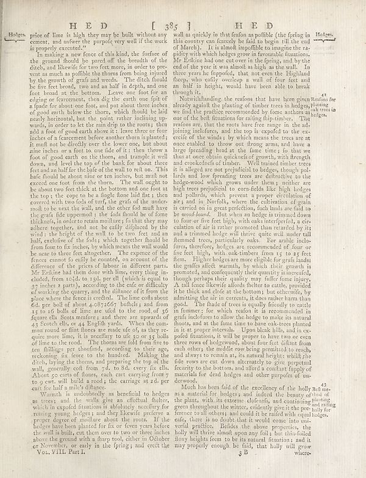

Source · scan and Parse blocks
Layers 1

Parse text by block reading order
- 0TextHedges. price of line in high they may be built without any content, and author the purple very well if the work is properly executed?’
- 1TextIn making a new fence of this kind, the surface of the ground should be proud off the bench of that ditely and likewise for some feet away in order to pre- vent as much as polible the thoms from being injured by the growth of goods and weeks. The dicht should be fine for the bowed, two can an half in depth, and one foot broad at the bottom. Leave one foot for an elging or forcements, then dip the catch one field of 4 pools for about one foots and put about three inches of good earth below the thons, which should be laid nearly horizontal, but the point, rather including upwards, in order to let the mind drop on the roots, the add a foot of good earth above it; leave three or four inches of a farement before another short against it. It must not be directly over the lower one, but about nine inches, or a foot to one side of it; then throw a foot of good wood on the thoms, and example it well down, all level the top of the bank for about three feet and an half for the bake of the wall to tell. This hale should be about once or ten inches, but must not exceed one foot from the them. The wall ought to be about two feet thick as the hours and one foot at the top; the cops to be a single love laid like; y they covered with two folds of turf, the grafs of the under- moot to be east the wall, and the other feel mad have the grads (ide opponent); the food found due of time thickness, in order to retain moisture; fo that they may adhere together, and not be fully diligated by the wind is the height of the wilt to be too fast and an half, exclusive of the folks; which together should be from four to fix holes, by which means the wall would be near to three categories. The expense of the fences cannot fo cally be counted, on account of the difference of the prices of labour of different parts. Mr Drinke had time down one limit, every thing, included, from 1c2d, to 13d, per ell (which is equal to 27 inches) a party, according to the rule are effectively of working for country and the influence of it from the place where the fence is erected. The lime rolls about 60, per decade of about 4009/66y holidas, and from 15 to 16 balls of lime are wild on the roof of 26 square ella Scots measure; and there are upwards of 43 Stretch oils, or 44 lightly water. When the com- men round or flott losses are made ufe of, as they require more lime, it is necellary to do its 20 or 35 balls of lime or the center. The thorax are fold from the ten lullings per thousand, according to their age, reckoning ix feces to the hundred. Making the dirh, buy the thons, and preparing the top of the wall, generally colft from 7d, to 8d, every 8r else. About 50 carts of dams, each cart carrying from 7 to oes will build a resta the carriage at 20, per cart for half a mile-left glance.
- 2TextWarnish is undoubtedly an beneficial to hedges as trees; and the walls give an efficient holder, which in expected titanium is absolutely necessary for resting young hedges; and they likewise prefere a proper degree of smaller income about the treats. If the hedges have been planted for six or even years before the wall is bulk, cut them over to two or three inches above the ground with a sharp root, either in October or November, or early in the spring; and crack the
- 3Textwall as quickly in that featon as polible (the fring in this country can feasibly be fed to begin till the end of Alberto). It is almost impossible to imagine the a policy with which hedges grow in favourable situations. Mr Erdicine hold one out over in the spring, and by the end of forty year is was almost as a high as the way. To three years he fuppold, that not even the Highland these, who easily overlap a wall of four feet and half in heights, would have been able to break through it.
- 4TextNorthhandling, the reasons that they learn given Results for already against the planting of timber trees in hedges, planning we find the practice recommended by home authors as hedges. One of the fall fluctuation for many flip-times. The reason are: that the roots have free money in the soil joining incolores, and the toy is exposed to the ex- credits in the winds, by which means the trees are at once enabled, to those out strong arms, and have a large spreading head at the fence time; fo that we thus at once obtain quick-cut of growth, with strength and considered of timber. Will trained timber trees it is alleged are not prejudicial to hedges, though pal-lars and low foregressing trees are effective to the hedgewood which grows under them; neither are high trees republished to corn fields like high hedges and pollards, which prevents a proper circulation of als; and in Norfolk, where the cultivation of grain is carried on in great preferred, such bands are fold to be wound. But when an hedge is normal down to four or five feet high, with axis interported, a cir- culation of air is rather promoted than reached by its trimmed clayey will thrive quite with similar all fleemned trees, particularly oak. For arabic indo- ray, therefore, heavy areas are recommended of four or five feet high, with oak lember from 7 to 83 feet fiem. Higher hedges are more eligible for grade landst ing grafts after warmth, by which their growth is promoted, and consequently their quantity in intervals, though perhaps their quality may fuller home injury. As oil fence likely absorbs the cattle, provided the thick disk of color of the bottom, but currently, by admitting the air in currents, it does rather harm than good. The flames of trees equally friendly to excite the farmers for which reitor it is never used in grafs inclofures to allow the hedge to make its natural thorns, and at the first time to have oak tree planted in it paper traversé. Upon both hills, and in ex- poefed futations, it will be proper to have two or even three rows of hedgedows, about four feet climb from each others, the middle row being permitted to reach, and always to remain at, its natural heights whilst the the rows are cut down alternately to give repeated security to the bottom, and find it's comfort tiply of material for dead hedges and other purposes of un-devood.
- 5TextMuch has been laid of the excellence of the holly Red me as a material of hedges and indeed the beauty of what of plants with its extreme clolerés, and containing and rolling green throughout the winter, evidently gives the peo only for ference to all others and could it be rafted with equal hedges, they, is no doubt that it would come into our vertical practice. Hidden the above properties, the holly will thrive almost upon any foil; but thin-folded flowy heights (em to be its natural fiturions; and it may plogely enough be fail, that holly will grow
Provenance page_id, checksum, Parse model
- page_id
- britannica:309f765b1ecc83e0a7f7762e44b4a927a7555443:train:1324
- sha256
- 2cfbaa25a150c2ea23ac854aafdb05fa22f350334e1404f609866a252d061217
- Parse
- nvidia/nemotron-3.5-parse · finish stop